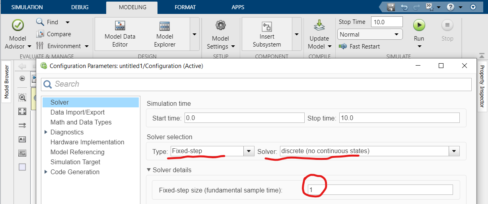
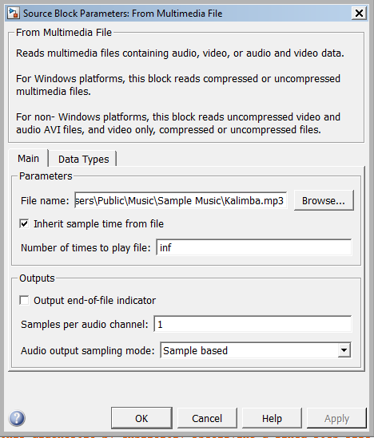
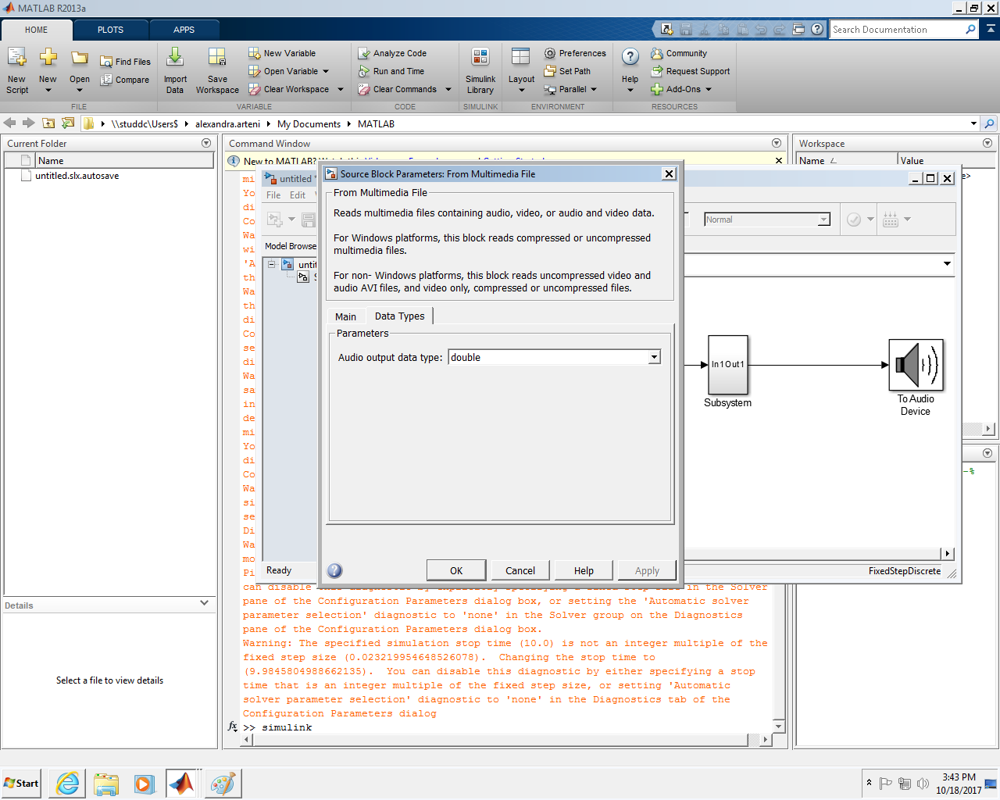

Basic filtering in Simulink and Matlab
DSP Lab 07
1 Objective
Students should implement direct filtering techniques in Simulink and Matlab.
2 Theoretical aspects
TBD
Basic Simulink blocks for audio signal processing
Advanced Multimedia blocks from the DSP Toolbox: FromMultimediaFile, AudioDeviceWriter, Buffer
Settings needed for our models
Running a discrete model requires configuring some settings, as depicted in Figure 1.

Setting needed for the From Multimedia Device block
In our work, using the From Multimedia File block requires special settings as well:
 
Setting needed for the Buffer block
The Buffer block also needs changing the buffer size to a value like 512 or 1024.
3 Exercises
Implement a Simulink model for the following filter. Use it to filter the file
Kalimba.mp3(use FromMultimediaFile) and play the resulting output (Buffer + AudioDeviceWriter). \[y[n] = \frac{1}{9} \cdot \left( 0.8 y[n-1] + x[n] + 0.8 x[n-1] \right)\]Make sure you set the properties of the From Multimedia File block as shown above.
Listen to the original sound and the filtered sound. Is there an audible difference?
Plot the input and the output signals
Repeat with the following filter: \[y[n] = \frac{1}{9} \cdot \left( -0.8 y[n-1] + x[n] - 0.8 x[n-1] \right)\]
Do the same filtering with Matlab code. Load the same audio file with
audioread()and use aforloop to implement the system equation at every time momentn.Listen to the original sound and the filtered sound (
sound())Plot the input and the output signals
In Simulink, check the linearity of these systems by checking if the linearity equation holds:
- create multiple copies of the system inside the model (copy/paste)
- use two randomly generated input vectors
xandy(use one of the Random blocks), and some two constantsaandb - check that the output of the system when the input is
a*x + b*yis exactly equal to the weighted sum of the outputs applied separately toxandy
Test time-invariance in a similar way
- the system will be applied to an input vector
x, and toxprepended with a variable number of zeros (i.e. time delayed) - the outputs shall be checked if they verify the time invariance equation
- the system will be applied to an input vector
Find an input signal \(x[n]\) to show that the system \(y[n] = y[n-1] + x[n]\) is unstable. Show it by simulating the model and displaying the output.
4 Final questions
- TBD